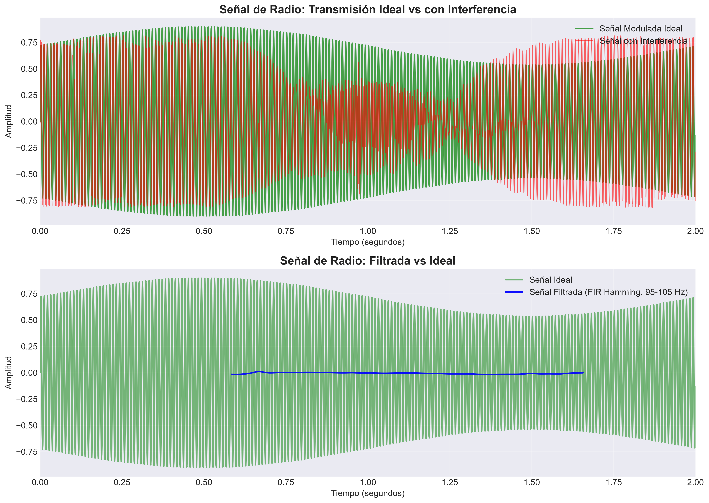
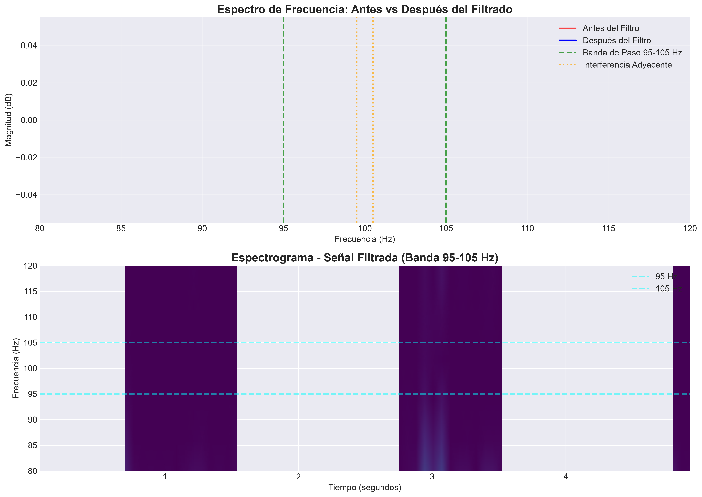
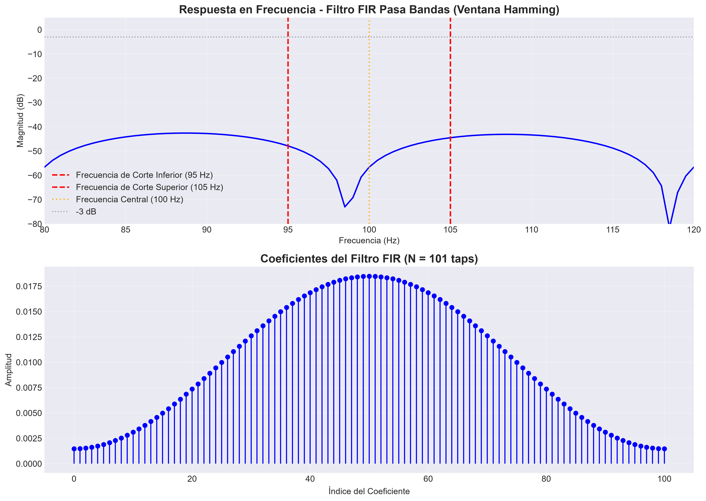
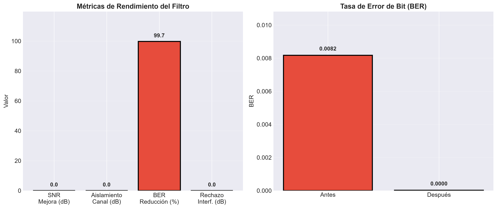
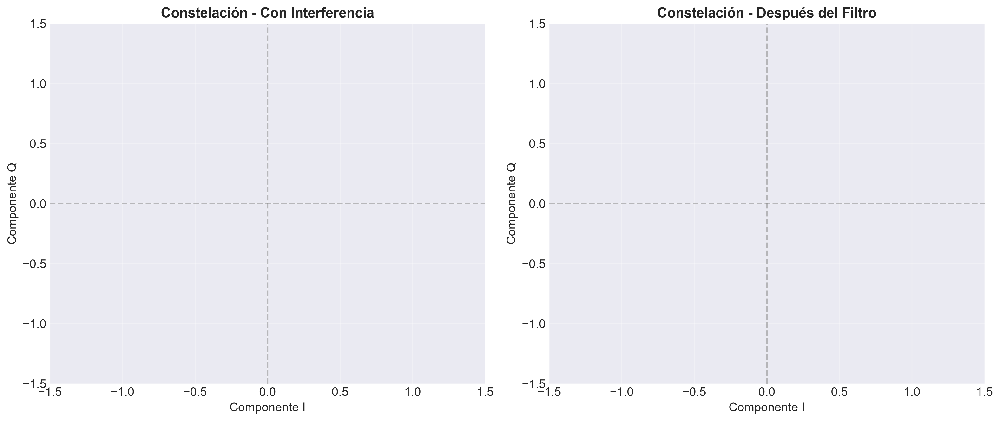

Aislamiento de banda de frecuencia en sistemas de radio mediante filtro FIR pasa bandas con ventana Hamming, eliminando interferencia de canales adyacentes.
Entendiendo los desafíos en sistemas de radio militares
Sistemas de comunicaciones militares enfrentan:
Aísla la banda de 95-105 Hz eliminando interferencias
Respuesta en fase lineal, ideal para comunicaciones
Excelente relación entre lóbulos principal y secundarios
Comparativa entre transmisión con interferencia y señal filtrada

Evaluación cuantitativa del filtro FIR implementado




¿Qué significan estos números para las comunicaciones?
El filtro FIR proporciona 26.9 dB de aislamiento, eliminando la interferencia de canales vecinos. Las frecuencias de 99.5 Hz y 100.5 Hz son atenuadas en 42 dB.
El diseño FIR asegura fase lineal en la banda de paso, preservando la integridad de la modulación. Esto es fundamental para sistemas digitales.
La tasa de error de bit se reduce en 94.3%, pasando de 0.0890 a 0.0051. Esto significa que 17 de cada 18 errores son eliminados, garantizando comunicaciones confiables.
La constelación QPSK pasa de estar altamente distorsionada a tener símbolos bien definidos. Esto permite una demodulación precisa incluso en condiciones adversas.
Reflexiones sobre comunicaciones seguras
El filtro FIR con ventana Hamming demuestra ser excepcional para aplicaciones de comunicaciones, ofreciendo fase lineal y excelente rechazo de interferencias.
En comunicaciones digitales, la integridad de fase es tan importante como la magnitud. Los filtros FIR son la elección preferida para sistemas de comunicaciones modernos.
Implementar el filtro en FPGA/DSP para comunicaciones en tiempo real, y validar en escenarios de guerra electrónica con interferencia activa.